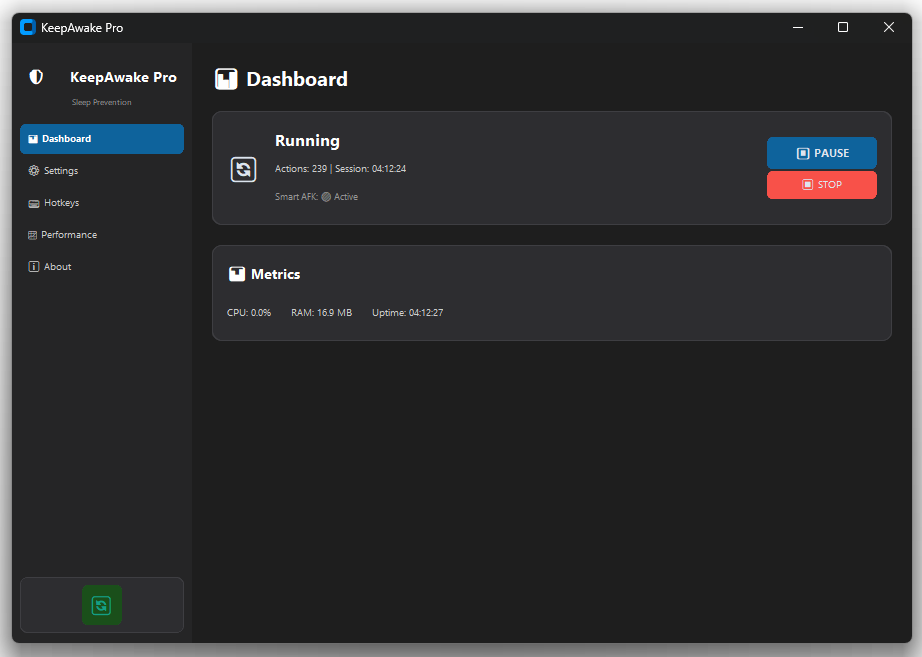

Your PC stays awake. You stay productive. Smart AFK simulation, system tray control, and scheduled hours — all in one.

KeepAwake Pro is a Windows utility that prevents your computer from going to sleep, locking, or activating the screensaver. It lives quietly in the system tray and works invisibly in the background — until you need it.
Unlike simple "move the mouse" solutions, KeepAwake Pro uses smart AFK simulation that looks indistinguishable from real user activity, so it works even with applications that monitor for genuine input.
Anyone who needs their PC to stay awake during long downloads, renders, presentations, or remote meetings. Especially useful when you cannot change your system's sleep settings (corporate laptops, shared computers).
I kept running into the same problem: stepping away from my PC for a few minutes and coming back to a locked screen, broken download, or interrupted remote session. The built-in Windows solutions felt clunky. I wanted something smarter — something that would fit into the system tray and just work.
I described what I wanted: a system tray app for Windows, with smart AFK simulation, a schedule, and hotkeys. Claude Code built the whole thing — the UI, the Windows API calls, the tray icon logic, the scheduler. I didn't write a line of code. I just described what I wanted and refined through conversation.
What impressed me was how Claude Code handled the Windows-specific details — system tray integration, global hotkeys, startup options — without me needing to know any of that. I just said what the app should do, and it handled the how.
"I described a frustration. Claude Code turned it into a tool that fixes it permanently."
Full source on GitHub. Clone it, modify it, make it your own.
View Source on GitHub →
💬 Comments
No account needed — just enter your name and comment